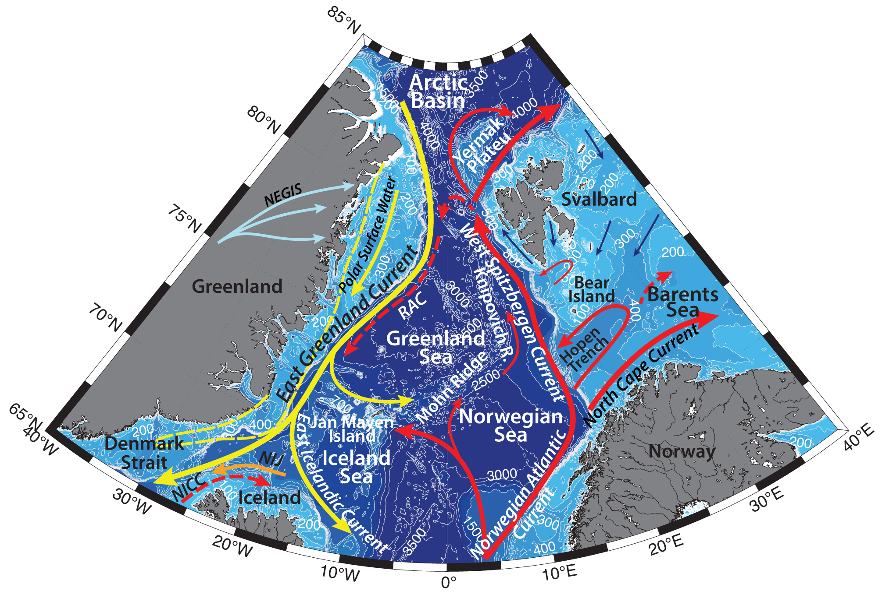

Schematic water circulation patterns and geographical place names in the Fram Strait region. Adopted from Wang et al., 2020; Ozhigin et al.,2000; Bourke et al., 1992; Rudels et al., 2002; McClimans et al., 2012; Brakstad et al., 2019. Dashed line marks the studied region.
Hydrography of the region is characterized by the East Greenland Current, vast land fast ice, polynya formation, influence of Atlantic Water, as well as continental runoff of the ice, freshwater, and terrigene material from the Greenland.
East Greenland Current is the main conduit for waters exiting the Arctic Ocean. EGC flows from the Fram Strait southwards to the Cape Farewell and carries sea ice, as well as cold and fresh Polar Surface Water (-1.9<T<0°C), Atlantic Water both recirculated in the Basin (also known as Arctic Atlantic Water; T<~1°C; e.g. Rudels et al., 2002) and the Return Atlantic Water from the Fram Strait, and cold Polar Deep Water out from the Arctic Basin (e.g. Rudels et al., 2002). On its way along the Greenland slope the EGC interacts with waters from the Greenland and Iceland Seas and incorporates additional intermediate water masses.
While the high temperatures of the Atlantic Water in the West Spitzbergen Current contribute to keeping the region ice-free throughout the year (Lien & Trofimov, 2013), there is a southward transport of sea ice on the western side of the strait with the East Greenland Current. Transpolar drift carries ice across the Arctic Basin towards Fram Strait, where mean speeds can be about ~10 km per day (Hunkins, 1990).
Northeast Greenland coastal region used to be covered with perennial fast ice, known as the Norske Øer Ice Barrier (NØIB; Sneed and Hamilton, 2016). NØIB varied in size from year to year, and has been observed to extend, for example, ~140 km east of 79 °N and ~375 km from south to north. Since 2000 the NØIB has broken up during many summers, so that it doesn’t have a persistent core of multi-year fast ice anymore, and, as the summers continue to warm in the region, it is unlikely that the NØIB will retain a year-round, semi-permanent feature of the Northeast Greenland coast (Sneed and Hamilton, 2016).
Greenland Ice Sheet provides ice, freshwater, and terrigene material into the coastal waters on the Greenland Shelf. A ~600-km-long Northeast Greenland Ice Stream (NEGIS) inflows into the Northeast Greenland region. It drains ~12% of the interior Greenland Ice Sheet via three fast-flowing marine-terminating outlet glaciers: Nioghalvfjerdsfjord Gletscher, Zachariae Isstrøm, and Storstrømmen Gletscher, which all accelerated and retreated after more than a decade of stability after 2006 (Larsen et al., 2018).
The Northeast Water (NEW) polynya can form on the Northeast Greenland shelf. It can reach 100 km long, stretching between Nordöstrundingen, Greenland’s most northeasterly cape and 79 °N. It is suggested to be formed and maintained because two ice barriers, one along the Ob Bank southeast of Nordöstrundingen and another, centered on Norske Øer, the NØIB, that shelter the region from the sea ice exiting through the Fram Strait and flowing southward. The ice barrier at the Ob Bank steeres the southward flowing sea ice in the EGC eastwards, away from the coast, while the NØIB blocks sea ice entrained in the Northeast Greenland Coastal Current from flowing northward into the polynya (Sneed and Hamilton, 2016).